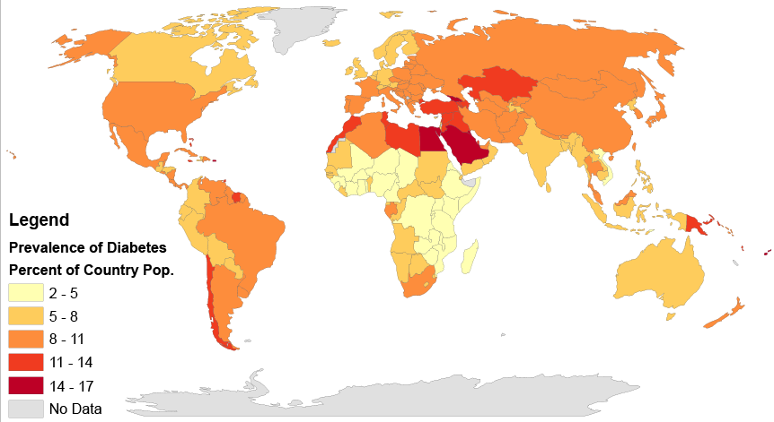

About
Developing countries such as India face a huge burden of diabetes and its complications. India is home to 77 million diabetic patients; it is the second highest in the world. Even children at the age of five are suffering from this disorder. It is high time that people understand the gravity of the situation and make themselves fit to fight the disorder than to suffer with it. There is a need to bring awareness among people so that they can avoid situations that lead to diabetes, understand and identify the symptoms of diabetes at an early stage, consult the best doctors and get medications at affordable rates. We bring in a website that helps people in understanding everything about diabetes and helps them in taking care of themselves and guiding them to fight against this chronic disorder.
Introduction
- Diabetes is a chronic disorder the world is suffering from.
- Two-thirds of all people with diabetes live in urban areas.
- Diabetes is increasing at alarming rate among Indians especially South Indians with prevalence of diabetes mellitus (PODM) varying in populations of different regions.
- According to the American Diabetic Association (ADA) criteria, the diabetic prevalence rates were 4.6% and 1.9% in urban and rural areas respectively.
- There is an urgent need to arrange several awareness programs in different parts of the country about symptoms of DM, factors causing it, medication, complications and its preventions etc.
- It is important that people are extremely aware about the disorder, its symptoms and precautions to be taken to prevent the disorder.
Diabetes in the world
According to the map given below one can understand the prevalence of diabetes in the world.
According to idf.org in 2021,
- Approximately 537 million adults (20-79 years) are living with diabetes.
- The total number of people living with diabetes is projected to rise to 643 million by 2030 and 783 million by 2045.
- 3 in 4 adults with diabetes live in low- and middle-income countries
- Almost 1 in 2 (240 million) adults living with diabetes are undiagnosed
- Diabetes caused 6.7 million deaths
- Diabetes caused at least USD 966 billion dollars in health expenditure – 9% of total spending on adults
- More than 1.2 million children and adolescents (0-19 years) are living with type 1 diabetes
- 1 in 6 live births (21 million) are affected by diabetes during pregnancy
- 541 million adults are at increased risk of developing type 2 diabetes
- 14th of November is considered as the World Diabetic Day
Diabetes in India
The global prevalence of diabetes is increasing around the world, and India is seeing a stark rise in diagnoses. This is due to a complex set of factors, including genetic components and changes in eating behaviors and activity levels. Access to diabetes care and education is an important step to address this issue.
According to the map given below one can understand the prevalence of diabetes in India
According to the above map we can see that diabetes has highest prevalence in Delhi,Tamil Nadu and Kerala
According to Healthline.com:
- There are about 1.3 billion people in India — roughly four times the population of the United States. However, 72.9 million people in India had diabetes as of 2017, which rose from 40.9 million in 2007.
Most of this increase is in cases of type 2 diabetes, which is caused by insulin resistance and the pancreas slowly losing the ability to make insulin. A complex set of factors can contribute to the development of type 2 diabetes, including:
- genes
- environment
- lifestyle
Below are some contributors that have been linked to increases in diabetes prevalence in India:
- lack of education about diabetes prevention strategies
- vegetarian food choices that are high in carbohydrates, oils, and fats
- increased consumption of processed meats
- low consumption of fruits, nuts, seeds, and whole grains
- less exercise
- more screen time
- tobacco use
- alcohol use
- environmental pollution
- high blood pressure
- high cholesterol levels
Other risk factors for diabetes among people in India include:
- higher rates in married and separated people compared with single people
- having obesity
- having a higher waist circumference
- a family history of diabetes
- People of Asian descent may also have more visceral fatTrusted Source, which is abdominal fat around the organs, and can increase the risk of diabetes.
Types of Diabetes
There are three main types of diabetes.They are:
- type 1 diabetes
- type 2 diabetes
- gestational diabetes
- Monogenic diabetes syndromes
- Cystic fibrosis-related diabetes
- Drug or chemical-induced diabetes
Type 1 Diabetes
Type 1 diabetes is believed to be an autoimmune condition. This means your immune system mistakenly attacks and destroys the beta cells in your pancreas that produce insulin. The damage is permanent.
What prompts the attacks isn’t clear. There may be both genetic and environmental reasons. Lifestyle factors aren’t thought to play a role.
Up to 10% of people who have diabetes have Type 1.
It was once better known as “juvenile” diabetes. People with Type 1 diabetes need to take insulin every day. This is why it is also called insulin-dependent diabetes.
Symptoms of type 1 diabetes often develop quickly. It’s usually diagnosed in children, teens, and young adults.
Symptoms
Type 1 diabetes signs and symptoms can appear relatively suddenly and may include:
- Increased thirst
- Frequent urination
- Bed-wetting in children who previously didn't wet the bed during the night
- Extreme hunger
- Unintended weight loss
- Irritability and other mood changes
- Fatigue and weakness
- Blurred vision
Type 2 Diabetes
Type 2 diabetes starts as insulin resistance. This means your body can’t use insulin efficiently. That stimulates your pancreas to produce more insulin until it can no longer keep up with demand. Insulin production decreases, which leads to high blood sugar.
The exact cause of type 2 diabetes is unknown. Contributing factors may include:
- genetics
- lack of exercise
- being overweight
There may also be other health factors and environmental reasons
Symptoms
Signs and symptoms of type 2 diabetes often develop slowly. In fact, you can be living with type 2 diabetes for years and not know it. When signs and symptoms are present, they may include:
- Increased thirst
- Frequent urination
- Increased hunger
- Unintended weight loss
- Fatigue
- Blurred vision
- Slow-healing sores
- Frequent infections
- Numbness or tingling in the hands or feet
- Areas of darkened skin, usually in the armpits and neck
Gestational diabetes
Gestational diabetes is due to insulin-blocking hormones produced during pregnancy. This type of diabetes only occurs during pregnancy.
However, if you have gestational diabetes you're at higher risk of developing Type 2 diabetes later on in life.
Symptoms
- For most women, gestational diabetes doesn't cause noticeable signs or symptoms.
- Increased thirst and more-frequent urination are possible symptoms.
Prediabetes
Prediabetes means you have a higher than normal blood sugar level. It's not high enough to be considered type 2 diabetes yet, but without lifestyle changes, adults and children with prediabetes are more likely to develop type 2 diabetes.
If you have prediabetes, the long-term damage of diabetes — especially to your heart, blood vessels and kidneys — may already be starting. There's good news, however. Progression from prediabetes to type 2 diabetes isn't inevitable.
Eating healthy foods, making physical activity part of your daily routine and staying at a healthy weight can help bring your blood sugar level back to normal. The same lifestyle changes that can help prevent type 2 diabetes in adults might also help bring children's blood sugar levels back to normal.
Symptoms
Prediabetes doesn't usually have any signs or symptoms.
One possible sign of prediabetes is darkened skin on certain parts of the body. Affected areas can include the neck, armpits, elbows, knees and knuckles.
Classic signs and symptoms that suggest you've moved from prediabetes to type 2 diabetes include:
- Increased thirst
- Frequent urination
- Excess hunger
- Fatigue
- Blurred vision